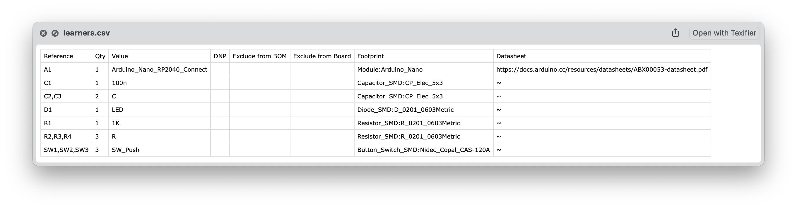
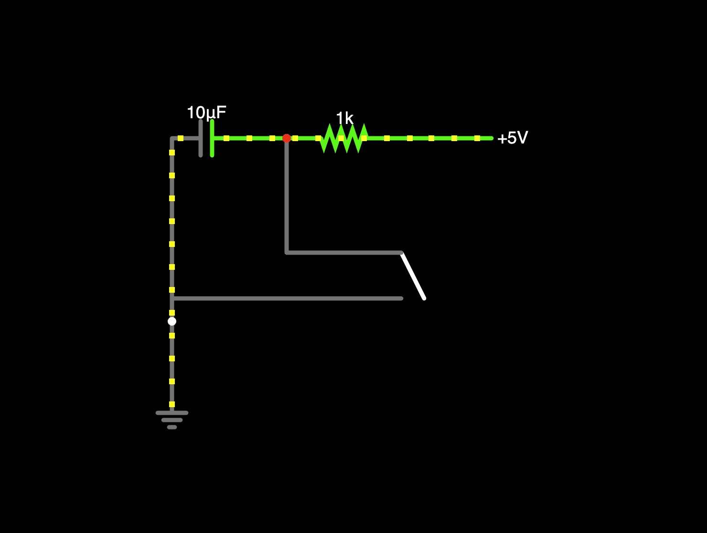

Week 5: Electronics Design
This week's assignment is about electronics design. This is one of the main things I want to get good at in this class because I have absolutely no experience in this! Because I have very little experience with PCB design, I’m going to start from the top and learn from online tutorials, like this instructables link.
Following the training tutorial recording, this is the final PCB design I made that's just an all-purpose PCB board for the RP2040 board. (This was done a bit after Week 5.)

Getting Started
Fusion and Kicad are all great EDA editors, and while I have more familiarity with Fusion, I think I found a lot more online guides and content about Kicad, so I decided to go with that. To begin, I followed this video on designing and working with the schematic. I started blindly to get what I know works on breadboard on Kicad:

Unfortunately, there's a few issues here I didn't quite know how to resolve. First, it didn't recognize the power symbols I was using (GND and 5V). To resolve this, I needed to add the power flag to the components. In addition, to convert this into PCB, you first need to design the footprints. That's when I decided to watch a few tutorials on this.
This video led to this schematic, which uses the Arduino Nano RP2040 Connect as the main microcontroller.

A few notes: the pins that don't have a connection require you to set as "no connect". To set the footprints, you need to have an idea of what type of component it is. Footprints are the physical copper pad patterns that components solder to, and you assign them before moving from schematic to PCB. Use Tools → Assign Footprints (or the icon that looks like an IC with a footprint) to open the footprint assignment tool. We can use the given HTMAA inventory to design the footprints here. The left side shows your schematic components, and the right side is the footprint library browser.
For quick assignment: for each component, double-click it in the left pane, then assign as follows:
- Resistors→
Resistor_SMD:R_0805_2012Metric(orResistor_THT:R_Axial_DIN0207_L6.3mm_D2.5mm_P10.16mm_Horizontalfor through-hole) - Capacitors →
Capacitor_SMD:C_0805_2012MetricorCapacitor_THT:C_Disc_D3.0mm_W1.6mm_P2.50mm - LEDs →
LED_SMD:LED_0805_2012MetricorLED_THT:LED_D5.0mm - Switches → depends on type; tactile button is usually
Button_Switch_THT:SW_PUSH_6mmor similar
The naming convention is: LibraryName:FootprintName_SizeInfo

Footprints are the physical implementation of a component—pad shapes, sizes, positions, and silkscreen—completely separate from the schematic symbol.
KiCad has a three-layer component system:
- Symbol (schematic): Electrical representation, pins and names
- Footprint (PCB): Actual copper pads, soldermask, silkscreen outline
- 3D model (optional): Visual representation for rendering
These layers are decoupled. One symbol can map to multiple footprints (e.g., a resistor symbol works for 0402, 0603, 0805, through-hole, etc.).
Footprint anatomy:
- Pads: Copper circles/rectangles for soldering, numbered to match symbol pins
- Silkscreen (F.Silkscreen layer): White lines showing component outline
- Fab layer (F.Fab): Reference info for assembly, usually hidden
- Courtyard: Keeps other components away, used by DRC
Then, you can run the ERC checker to ensure there's no other issues, and the convert it to PCB layout. In addition, I created a Bill Of Materials based on the footprint.


PCB layout is about translating electrical connections into manufacturable copper patterns while respecting physical constraints. Here's some things to keep in mind:
Layer structure: A 2-layer PCB has front copper (F.Cu, red) and back copper (B.Cu, blue) laminated with fiberglass. Through-hole pads automatically connect both layers. Vias are plated holes that let traces jump between layers. Most hobby boards are 2-layer; more layers cost more.
Core layers you design: Copper layers (F.Cu/B.Cu) are where current flows - you draw traces and pour planes. Soldermask is the green/purple coating that covers everything except pads. Silkscreen is white text and component outlines. Edge.Cuts defines board shape. Drill files specify hole locations and sizes.
Design rules (File → Board Setup): Track width sets minimum trace width, usually 0.15-0.25mm for cheap manufacturers. Clearance is minimum spacing between copper features. Via size defines drill diameter and annular ring. The DRC (Design Rules Checker) verifies you haven't violated manufacturing limits.
Copper pours/zones: Right-click → Add Filled Zone creates large copper areas, typically for ground planes. Way more efficient than routing individual ground traces. Fills all empty space with copper connected to your chosen net.
Layout workflow: Move components to minimize ratsnest crossing and group related parts. Route power and critical signals first. Add ground pour on back layer. Run DRC to catch errors. Add mounting holes if needed. Draw board outline on Edge.Cuts layer.
Manufacturing output: File → Fabrication Outputs → Gerbers generates the RS-274X files that PCB manufacturers need - one file per layer plus drill files.
Practical constraints: Traces carrying >1A need width calculators to avoid burning up. Keep decoupling caps physically close to IC power pins. High-frequency signals should be short and direct. 45° bends look cleaner than 90° but both work fine.

Next Steps
This week I didn't have too much time to actually play around and design things I was interested in. I want to make various synthesizer elements in circuits, because that's actually how they're made! Through using a different combination of capacitors, diodes, and resistors, you can do digital signal processing and alter waveforms easily. Since my final project is going to work with wave forms in some way (likely), I want to be able to understand it more deeply. Here's a falstad image of a drum kick sound machine that, when connected to a daw/speaker/drum sound, can make synthesizer changes to it.

Content Notes
- Voltage (V) – the potential energy needed for current flow (j/c = v)
- Current (I) – the amount of charge flowing in a time frame (c/s = a)
- Charge (Q) – driving force behind electrical energy (coulombs)
- Power (P) – amount of energy transferred in a time frame (joules/sec = watts)
-
Resistance (R) – material's opposition to charged flow (ohms)
- Ohm's law: I = V/R
-
Capacitance – ability to store electrical charge, C = Q/V
- Polarized capacitors – can only be used in one direction
- Inductance – ability of an inductor to induce an opposing voltage to the current, V = -L dI/dt
Diodes – similar to a resistor with the exception that current can only flow in one direction. One-way switch. LED is an example of one.
Transistors / MOSFETs – field effect transistor that either amplifies or switches.
Additional Notes
Any additional thoughts, resources, or references...